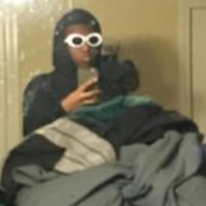

Edan
Born: July 12 2004
Age: 16
Height: 5"8
Power: Invisibility (Activated by holding breath, when attempting to breathe longer than normal makes him semi-transparent until breathing again or passing out)
Glen Edan Rogers is a British-born American artist and Jons best friend, Edan was raised with his father only, Debra Bennett (mother of Edan) divorced with his father while taking custody of Glen's sister while the father took custody of him.
Edan is based on
